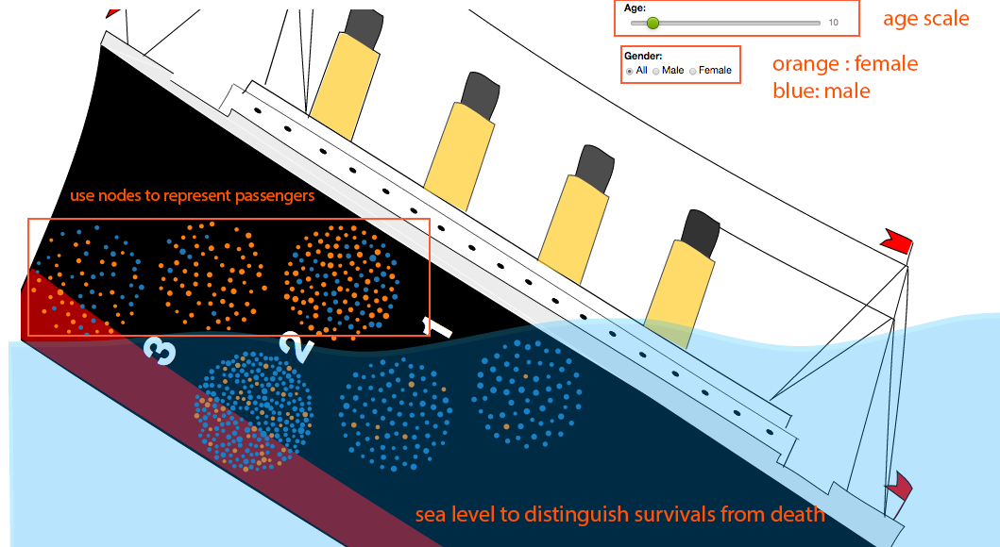
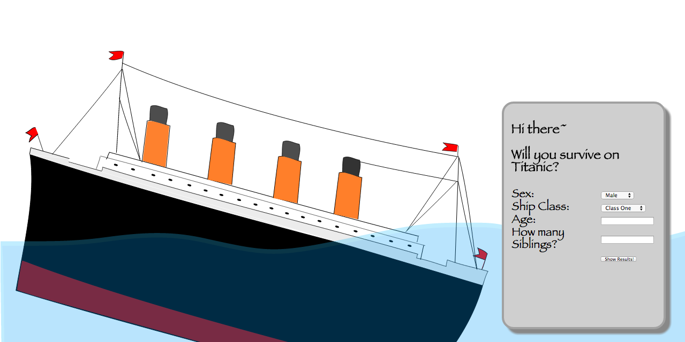

Data Visualization from Titanic: Machine Learning from Disaster(js, D3, SVG, css, photoshop)
Background
The sinking of the RMS Titanic is one of the most famous shipwrecks in history. One reason that the shipwreck led to such loss of life was that there were not enough lifeboats. We are presenting a visualized information of data in more interesting way: passengers with attributes, such as age, name, class, gender, etc., and the outcome: survival or not. We also developed a prediction game based on the model. DEMO here.
In previous work, line chart and pie chart have been used to illustrate whether a male or female passenger survival in the disaster or not. However, with the two-dimension graph, it is difficult to show more information in a single graph to compare the influence of different factors at the same time. Therefore, we deciede to use a more creative and direct way to display how ifferent attributes influence the outcomes, survival or not in this case.
Visualization
In order to display all attributes information, we created a ship background to illustrate all information more clearly.
The figure above shows a ship shape graph template. Gravity node visualization is applied on this rough shape, which could be corresponded with the attributes such as classes at different layers, genders, ages, and etc. We use the sea level to distinguish survival or not, and “1”, “2”, and “3” to indicate the passengers’ cabin class. Data are wrapped in JSON format. The advantage of the design is obvious. First, users can get the direct idea of additional information by the background. In traditional design, categories such as cabin class should be considered another attributes to describe the result. With the design of ship shape map, more room has been saved, and reduces the burden of plethora information shown on one page. Also, ocean background shows the result of individual’s survival condition directly. Above the ocean line are the people survive and below the ocean line are the ones dead. Each part conclude three classes. After data being loaded, we used color: blue and orange to indicate male and female.
Prediction
Another implementation we had for this project is an interactive design. We add animation effect(please check DEMO in presdiction section) to the visualization to increase the interaction between graphs and users.
We take advantage of the training data, and the classifier (from Logistic Regression) we had, to predict passengers’ survival or not. Moreover, since this was more toward a fun and interactive design, we allowed users to input values for Sex (either “Male” or “Female”), Ship Class (1st, 2nd, or 3rd), Age (numeric value), and Siblings (how many siblings aboard with you) as shown below. Attributes were chosen based on the outcome of the Logistic Regression. From the model, we found whether passengers on board have siblings or not affect the result to some extent. On the other hand, whether passengers are with parents or children doesn’t influence the outcome a lot. After user has input values, our system will apply them to the classifier got from Logistic Regression, and returned with the probability of passenger’s survival as shown below.
